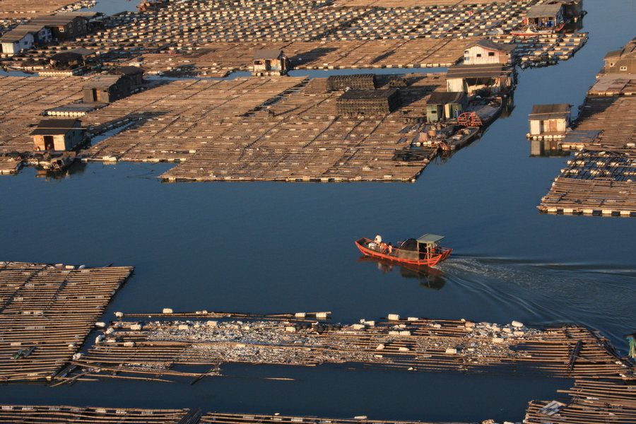

一分钟看懂先快速建立整体认知
XIAPU AT A GLANCE霞浦是福建宁德下辖县，以"中国最美丽的滩涂"闻名。核心看点围绕日出（北岐、花竹）、日落（东壁、小皓）与滩涂劳作（小皓沙滩、沙江S湾、杨家溪榕树）。这里不是"玩景点"而是"追光影"：涨潮退潮、日出日落决定一切，节奏放慢、按潮汐排机位，才能拍到霞浦的灵魂。
🌅 北岐日出
🌇 东壁日落
🪵 小皓滩涂
🛡 多免费机位
提示：霞浦的美是"等待"出来的——同一个点，潮位不同画面天差地别，别急着赶路。